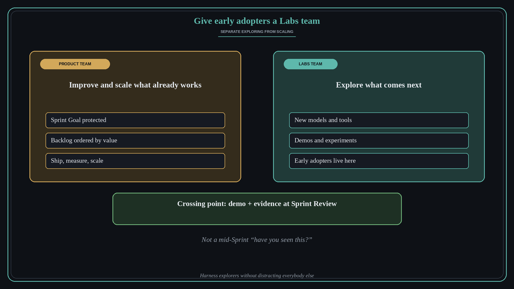

Give your early adopters a Labs team so they stop distracting the product team
Source: Dan Shipper (@danshipper, CEO of Every), Lenny & Friends Summit, via Lenny Rachitsky (@lennysan)
original post
What it claims
Every product org has a few people doing far more exploring than everyone else. They try new models and tools on weekends and bring ideas to work. Dan Shipper says they are worth finding, because they are your in-house early adopters: they are already living in the future and have a good sense of what the product might become. Many of the things they get excited about are not useful, though, and they can be a huge distraction for everyone else. His answer at Every, which he sees other strong companies copying, is a Labs team that separates the two jobs. The product team improves and scales what already works. The Labs team explores what comes next: frontier models, demos and experiments. You get exploration without pulling the execution team off course.
Why it matters for a PO
POs feel this every Sprint. One enthusiast drops a new AI demo into refinement, the Sprint Goal wobbles, and the team spends a week on a side quest. Banning exploration loses the signal, and letting it leak into every backlog loses focus. Naming who explores, and where that work lives, protects the Sprint Goal and still gives the frontier a home. This is about org design, which sets it apart from the roadmap allocation in lesson 9 (70/20/10) and from the warning against discovery and delivery silos in lesson 48. Labs is a deliberate split of people and mandate, with a clear way for ideas to cross over.
3 takeaways
- Find your explorers on purpose. A few people spend most of their time exploring, and they are your internal early adopters.
- Split the mandates. The product team improves and scales what works, and Labs explores what comes next.
- Design the crossing point. Labs ideas reach the Product Backlog through a named route, such as a demo at Sprint Review or a backlog item with evidence, never through a mid-Sprint interruption.
Practice this week
List the two or three people on or around your team who explore the most. For one month, give them a small, timeboxed Labs lane with its own board, separate from the Sprint Backlog. Agree that anything from Labs reaches the Product Backlog only with a short demo and one piece of evidence, shown at Sprint Review. Afterwards, count how many mid-Sprint “have you seen this?” interruptions went away and how many Labs ideas earned a place on the backlog.